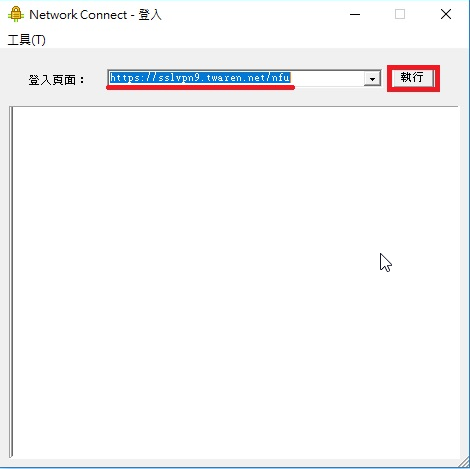
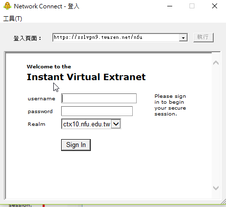
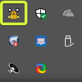

將youtube影片放入倉儲 << Previous Next >> 亂數抽選
將youtube影片放入倉儲 << Previous Next >> 亂數抽選
VPN
使用VPN將校外電腦的IP連上學校的 使系統認定校外電腦可使用校內資源 例如 : 下載正版且免費的AutoCAD、Office system...
1.至此連結下載圖片所示程式

2.開啟上面程式 開啟完後在CMD搜尋"Network Connect"並點開程式

3.於"登入頁面"輸入網址 : https://sslvpn9.twaren.net/nfu 並執行

4.登入

5.完成後右下方會出現所示圖案 此圖表示成功

將youtube影片放入倉儲 << Previous Next >> 亂數抽選